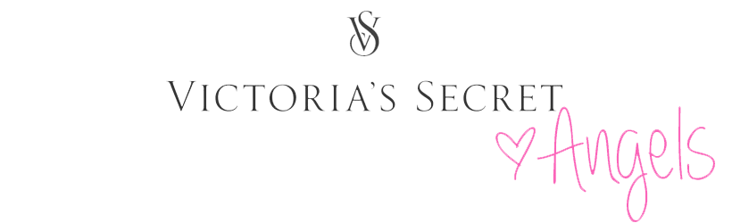
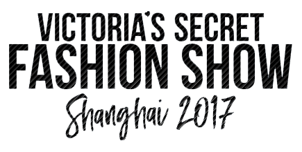

What is The Victoria's Secret Fashion Show?
Annual show sponsored by and featuring Victoria's Secret, a brand of lingerie and sleepwear. Victoria's Secret uses the show to promote and market its goods in high-profile settings.

Victoria's Secret Angels
The show features some of the world's leading fashion models:
Adriana Lima,
Behati Prinsloo,
Candice Swanepoel,
Lily Aldridge,
Elsa Hosk,
Jasmine Tookes,
Josephine Skriver,
Lais Ribeiro,
Martha Hunt,
Romee Strijd,
Sara Sampaio,
Stella Maxwell, and
Taylor Marie Hill.
Story
The first fashion show extravaganza, introduced by Stephanie Seymour, was held at the Plaza Hotel in New York City in August 1995. The show also featured Beverly Peele and Frederique van der Wal. This first fashion show occurred two months before The Limited, parent company of Victoria's Secret owner Intimate Brands, sold an initial public offering of a 16 percent stake in the company and almost had Seymour make an appearance at the New York Stock Exchange (NYSE) for the opening bell. She actually did ring the closing bell at the NYSE as part of the publicity campaign. The subsequent three annual shows were also held at the Plaza.

The 2017 show was held Shanghai, China and wasthe first Victoria's Secret Fashion Show to be held in Asia. The show will feature the first-ever segment in collaboration with another brand, French fashion house Balmain. The theme and designs were co-steered by Victoria's Secret and Balmain creative director Olivier Rousteing. Early rumors suggested that Taylor Swift would perform alongside Styles, but this was determined to be a hoax. A performance by Katy Perry was cancelled due to her visa being revoked. A week before the show was due to be filmed, model Gigi Hadid confirmed that she was also denied a visa. Russian and Ukrainian models due to feature in the show were also reportedly denied visas for entry to China, therefore were not featured in the show.